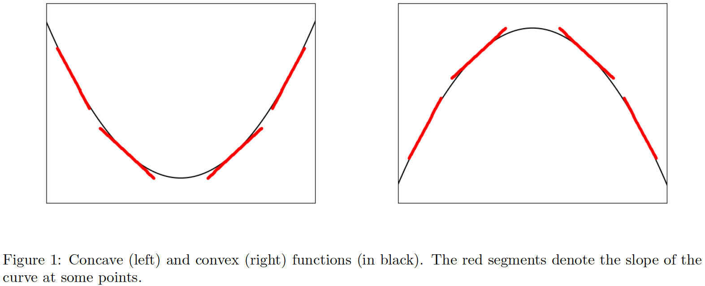
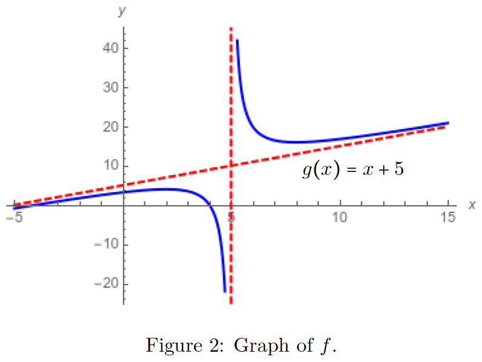

11 Applications of derivatives
11.1 Guide for full study of a function
Although there is no established rule to sketch the graph of a real function \(f ∶ \mathbb{R} \to \mathbb{R}\) that is “sufficiently simple”, the following paths will be adopted as a guide:
- Determination of the domain of \(f\).
- Determination of the zeros of \(f\) (if they exist) (axis intersections).
- Analysis of \(f′\) (the zeros of this function are candidates for local maxima/minima and indicate if the function is increasing or decreasing).
- Analysis of \(f′′\) (the zeros of this function are candidates for inflection points and indicate if the function is concave or convex).
- Determination of asymptotic behavior (determination of limits at the end of the domain).
- Determination of asymptotes (if applicable) and of lateral limits at discontinuity points.
11.2 Example of how to graph a function
Reference: Hase (2022)
\(f(x) = \cfrac{x^2 - 16}{x - 5}\)
1. The domain of \(f\) is a subset of \(\mathbb{R}\) that excludes the points where the function \(f\) is not defined; therefore, \(Dom(f) = \mathbb{R} \smallsetminus \{5\}\).
2. The zeros of \(f\), which are solutions of \(f(x) = 0\), are \(x = 4\) or \(x = −4\).
3. In the analysis of \(f′\), where
\[f'(x) = \cfrac{(x - 2) (x - 8)}{(x - 5)^{2}}\]
a special attention should be paid to the points \(x = 2\) and \(x = 8\) (where \(f′(x)\) vanishes), besides \(x = 5\) (where the function is not defined). Therefore, one has:
| \(x\) | \(x < 2\) | \(2\) | \(2 < x < 5\) | \(5\) | \(5 < x < 8\) | \(8\) | \(8 < x\) |
| \(f'\) | \(+\) | \(0\) | \(-\) | \(\times\) | \(-\) | \(0\) | \(+\) |
| \(\text{Variation}\) | \(\nearrow\) | \(\longrightarrow\) | \(\searrow\) | \(\times\) | \(\searrow\) | \(\longrightarrow\) | \(\nearrow\) |
The candidates for the extremal points (local maxima or minima) are the roots of \(f′(x) = 0\), which are \(x = 2\) or \(x = 8\). From the table above, one can see that \(x = 2\) is a local maximum, while \(x = 8\) is a local minimum.
4. The second derivative of \(f\), denoted by \(f′′\), is defined as the derivative of \(f′\). It can characterize the convexity of \(f\). As an example, consider the graphs of figure 1: the functions \(f\) are represented by black curves, while their slopes (the derivative of \(f\), represented by \(f′\)) are depicted by red segments at some points. In the left figure, the derivatives \(f′\) increase, which means that \((f′)′ \equiv f′′ > 0\). On the other hand, the derivatives of the function decrease in the right picture, i. e., \((f′)′ \equiv f′′ < 0\). The former is a concave function (at least in the region under consideration), and the latter is a convex function (again, in the region under analysis). If there exists a point \(\tilde x\) that separates two different convexities, \(\tilde x\) is called an inflection point. This means that \(f′\) changes sign at \(\tilde x\). Therefore, looking for the zeros of \(f′′\) is a natural way to search for the candidates for inflection points.

Returning to the example under examination, the behavior of \(f′′\), where
\[f''(x) = \cfrac{18}{(x - 5)^{3}}\]
should pay special attention to the point \(x = 5\) (where the function is not defined). Therefore, one has:
| \(x\) | \(x < 5\) | \(5\) | \(5 < x\) |
| \(f''\) | \(-\) | \(\times\) | \(+\) |
| \(\text{Convexity}\) | \(\cap\) | \(\times\) | \(\cup\) |
The candidates for the inflection points (where the convexity of the function changes) are the roots of \(f′′(x) = 0\), which does not exist in this example.
5. Analysis of \(f\) at the boundaries (\(x \to \pm \infty\)) and singularities, which is at \(x = 5\) in this example:
\[ \lim \limits_{x \to - \infty} f(x) = - \infty \quad , \quad \lim \limits_{x \to \infty} f(x) = + \infty \quad , \quad \lim \limits_{x \to 5^{-}} f(x) = - \infty \quad , \ \text{and} \quad \lim \limits_{x \to 5^{+}} f(x) = + \infty \]
6. For \(|x| \gg 1\) (\(\gg := \text{"much greater than"}\)), the function \(f\) may display a linear behavior. In this case, the line \(y = ax + b\), where \(a\) and \(b\) are, respectively, the angular and linear coefficients, become a suitable description of \(f\). The line \(y = ax + b\) is the asymptote of \(f\) (when it exists). Symbolically, one has \(f(x) \approx (ax + b)\), and the parameters \(a\) and \(b\) are evaluated as
\[ a = \lim \limits_{x \to \pm \infty} \cfrac{f(x)}{x} \quad \text{and} \quad b = \lim \limits_{x \to \pm \infty} [f(x) - ax] \]
The present function has an asymptote, given by \(g(x) = ax + b\), where
\[ a = \lim \limits_{x \to \pm \infty} \cfrac{f(x)}{x} = \lim \limits_{x \to \pm \infty} \left(\cfrac{x^2 - 16}{x - 5} \right) \cfrac{1}{x} = 1 \quad \text{and} \quad b = \lim \limits_{x \to \pm \infty} [f(x) - ax] = \lim \limits_{x \to \pm \infty} \left[\cfrac{x^2 - 16}{x - 5} - 5 \right] = 5 \]
The equation of the asymptote is, therefore, \(g(x) = x + 5\). The function has also a vertical asymptote \(x = 5\).
Gathering together the information above, one can sketch the graph of \(f\) (figure 2).

11.3 Financial/administrative functions
Reference: Morettin, Hazzan, and Oliveira Bussab (2003)
- \(R(P \ ou \ Q) = P \times Q\)
- \(L(P \ ou \ Q) = R(P \ ou \ Q) - C (P \ ou \ Q)\)
- \(C_{mg}(x) = C'(x) \ \ \ , \ \ \ \text{usually for} \ \Delta x = 1\)
- \(R_{mg}(x) = R'(x) \ \ \ , \ \ \ \text{usually for} \ \Delta x = 1\)
- Marginal propensity to consume (C) \(\rightarrow p^{c}_{mg} = C'(y) \ \ \ , \ \ \ y = \text{disposable income}\)
- Marginal propensity to save (S) \(\rightarrow p^{s}_{mg} = S'(y) \ \ \ , \ \ \ y = \text{disposable income}\)
- Marginal productivity \(\rightarrow P_{mg}(x) = P'(x)\)
11.4 Elasticity - Supply and Demand Function
Reference: Morettin, Hazzan, and Oliveira Bussab (2003)
Demand function: \(\cfrac{dx}{dp} < 0\)
Supply function \(\cfrac{dx}{dp} > 0\)
Break-even point: \(p_{d} = p_{o}\)
Percentage change in price: \(\cfrac{\Delta p}{p_{0}}\)
Percentage change in quantity: \(\cfrac{\Delta x}{x_{0}}\)
\(e = \left | \lim \limits_{\Delta p \to 0} \cfrac{\cfrac{\Delta x}{x_{0}}}{\cfrac{\Delta p}{p_{0}}} \right | = \cfrac{p_{0}}{x_{0}} \times \left | \lim \limits_{\Delta p \to 0} \cfrac{\Delta x}{\Delta p} \right | = \cfrac{p_{0}}{x_{0}} \times \left | \cfrac{\mathrm{d} x}{\mathrm{d} p} \right |\)
\(\begin{cases} e > 1 \rightarrow \text{elastic} \\ 0 < e > 1 \rightarrow \text{inelastic} \\ e = 1 \rightarrow \text{unitary elasticity} \end{cases}\)
* Does not apply in case of cross elasticity.